Jadoli
I mostly build Minecraft servers and Discord bots. I also automate repetitive work like store product listing and Excel.
I have been coding for 8 years and taking commissions for 5. Recently I built an Albion Online style MMORPG inside Minecraft on my own and took it all the way to a test launch.
Discord (erwq_) | Work
Minecraft
Belmore
Personal project, solo | Test launch Nov 2026
Albion-style Minecraft MMORPG server, custom NeoForge mod built solo
I designed and developed an Albion Online style Minecraft MMORPG server on my own.
It is a single integrated NeoForge 1.21.1 mod with an economy where gathering, transport, trade and combat all depend on each other.
- Weapon-based skill combat (weapon, helmet and armor skills on R, F and C)
- T1 to T10 gear tiers with enchantments and a custom equipment screen with ring slots
- Custom gathering nodes and a gather, refine and craft production tree
- Weight system and mount carry capacity that turn transport into gameplay
- Trade goods between cities, NPC buy orders and a player market
- Balance values edited in Google Sheets are applied to the server automatically
- Custom installer and updater that registers a profile in the official launcher
Tech: Java, NeoForge, Solo project, Google Sheets
Development and problem solving
- Scale
- 133 Java source files, about 19,400 lines (as of version 0.6). Updated continuously from 0.1 to 0.63 based on tester feedback.
- Problem
- Testers said the tutorial was unfriendly and item names looked so alike that they could not find what to craft.
- Fix
- Renamed items so the tier and type come first, like "T1 Cloth Armor", and added a search box and a craftable only filter to the crafting screen. Quest target items are highlighted at the top, and an arrow guides players to the target location. Tutorial materials were reduced so the first craft never blocks progress.
- Role
- Led planning, system design, implementation and testing, using AI coding tools to speed up development and iteration.

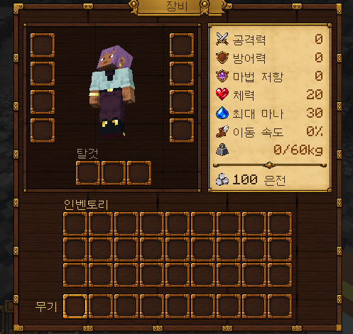
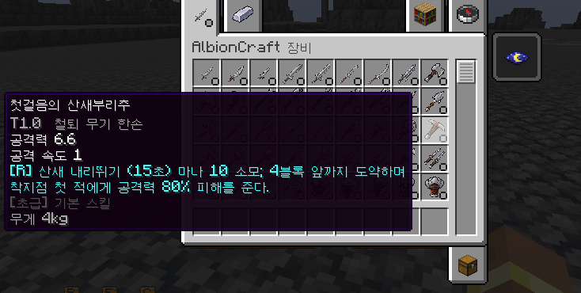
M&M Server Core
Team project, lead developer
RPG server core mod for a 75-mod setup, with a built-in web admin panel
The core mod at the center of a Forge RPG server running 75 mods.
It bundles everything the server needs, from the economy to faction progression, quests and protected zones, and includes a web admin panel built into the server so it can be run from a browser.
- Economy with wallets, a bank and cheques, plus shops with dynamic prices
- Contract trading between players
- Faction progression stages that unlock content step by step
- Delivery, hunting and transport quests with promotion trials
- Personal and team protected zones, combat state tracking
- Built-in web admin panel: economy stats, quest editor, shop prices, world rules and server settings, all changeable from a browser
- Separate admin accounts with per-menu permissions and an activity log
- Custom UI that replaces vanilla screens
Tech: Java, Forge, RPG server, Web admin
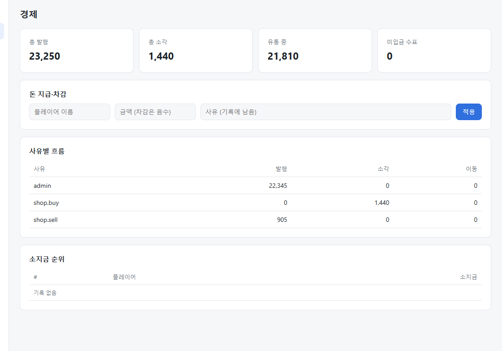
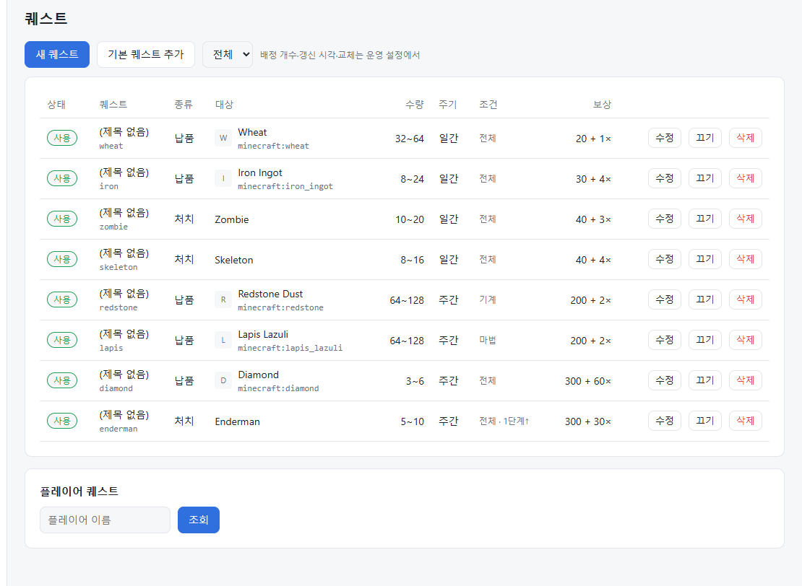
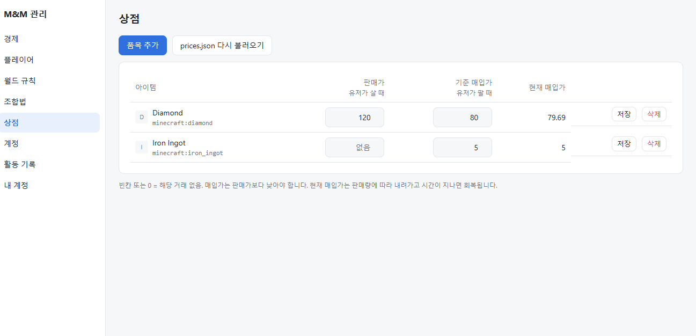
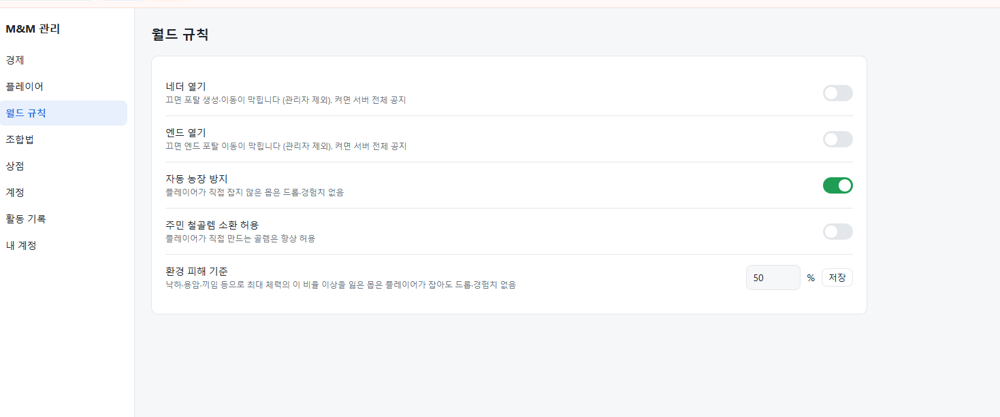
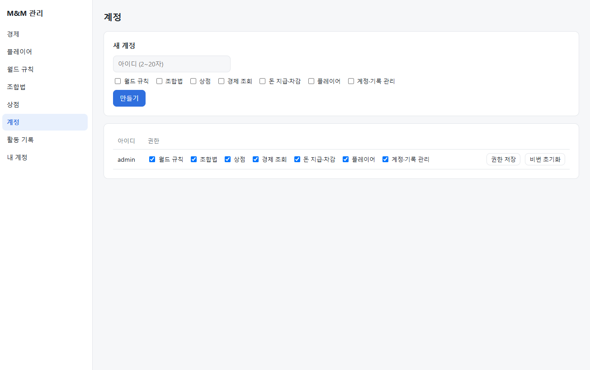
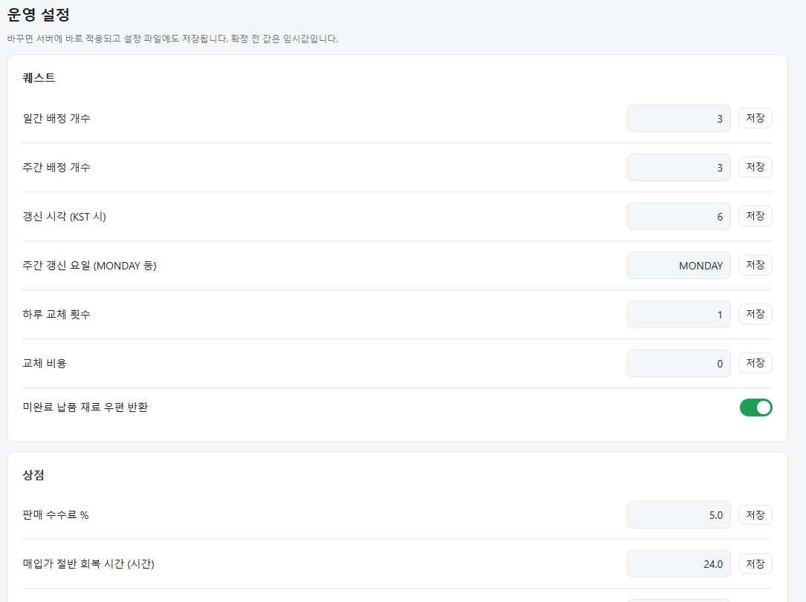
TideMarket
Personal project
Shop plugin with prices that move with supply and demand
A shop plugin where selling a lot of one item lowers its price for the whole server, and the price recovers over time. Buying a lot raises the buy price. Server owners can edit prices and check the trade log from a browser without joining the game.
On a Paper 1.21.11 test server, selling 3,330 wheat dropped its sell price by 62.2%.
- /sell GUI, sell hand, sell all, and selling items inside shulker boxes
- Category shop GUI showing current buy and sell prices and the 24h change
- Rank based sell multipliers and shop NPCs
- PlaceholderAPI support for live prices on scoreboards
- Web admin panel: dashboard, price editor, price charts, trade log, staff accounts with permissions, activity log
- Separate buy and sell multipliers to block buy low, resell high exploits
- Exact item by item pricing for bulk sales, database writes off the main thread
- Works with existing economy plugins through Vault, items returned if payment fails
- Web panel security: off by default, hashed passwords, login lockout, IP allowlist
- English and Korean for both game messages and the web panel
Tech: Java, Paper, Vault, PlaceholderAPI, Web panel
Development and problem solving
- Problem
- The first shop code used the same multiplier for buy and sell prices, so buying at the bottom and reselling after recovery generated money endlessly.
- Fix
- Split the buy and sell multipliers, and blocked the buy price from going below base and the sell price from going above it.
- Problem
- Bulk sale prices were estimated with an average and drifted from the real total.
- Fix
- Prices are now summed item by item, and once the floor price is reached the rest is calculated in one step.
- Problem
- Scoreboard plugins reading prices asynchronously could cause thread conflicts and lag.
- Fix
- Prices are precomputed on the main thread every second and placeholders only return those values.
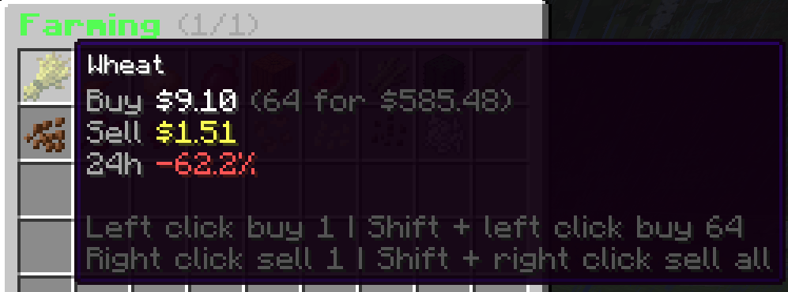
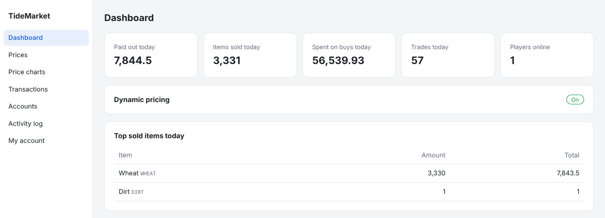
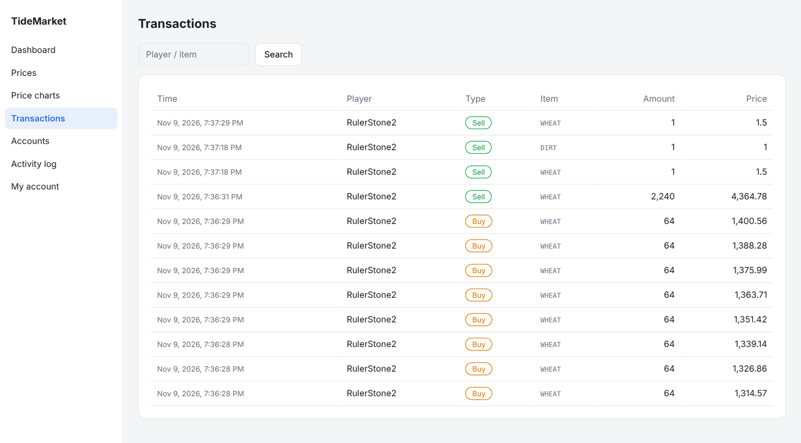
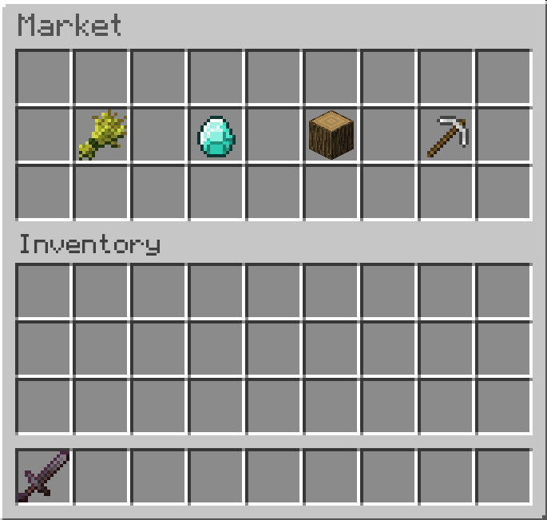
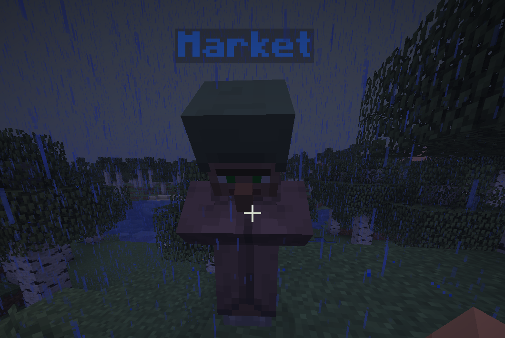
MineFarmCore
Personal project
Core plugin for MineFarm economy servers with its own economy, GUIs and NPC shops
A core plugin for MineFarm style economy servers.
It runs its own economy without any external economy plugin and is designed so the server can grow around the shop system.
- Built on Paper 1.21, with a Vault-compatible custom economy
- Both GUI shops and NPC shops
- Optional market price changes that server owners can turn on or off
- Used as proof of skill when I joined a fantasy RPG server team
Tech: Java, Paper, Economy, Vault compatible
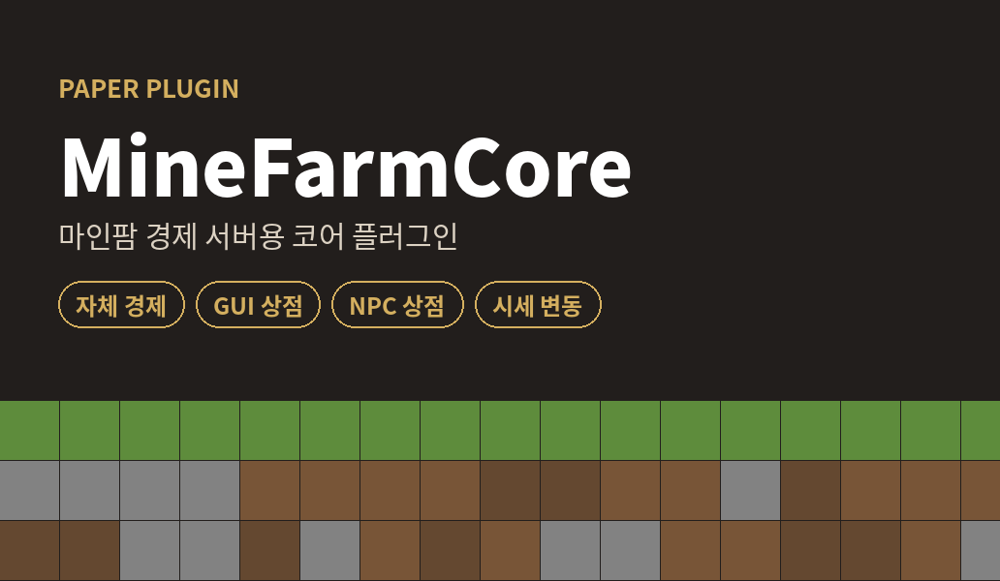
Automation and data
Smartstore Auto Listing Program
In use on my own store | Running in production
Standalone program that sources wholesale products, lists them on Naver, syncs stock and alerts on orders
A program that collects products through the Domeggook Open API and lists them on Naver Smartstore through the Naver Commerce API. Price and stock sync and new order alerts run without anyone touching it. Running on a real store, it automatically listed about 300 products a day, the daily listing limit.
- Collects products by keyword or category through the Domeggook Open API
- Automatically skips KC certified items, household chemicals, adult products, image restricted and imitation products
- Scores product names together with supplier categories to match one of Naver's 5,004 categories, and skips the product when unsure
- SEO processing: 50 character titles, promo phrase removal, 10 tags, product attributes and search settings filled in
- Automatic error recovery: reads banned tags, option symbols and image URL errors from the API response, fixes them and retries
- Products that differ only in color or length are merged into an existing product as options
- Automatic price, stock and sold out sync, plus order confirmation emails for new orders
- One batch file bumps the version, builds the exe and deploys to the run folder
Tech: Python, Naver Commerce API, Domeggook Open API, PyInstaller
Development and problem solving
- Problem
- A sink shower filter was put in a tableware category because its Korean name ends with a word that matches a dish category.
- Fix
- Two letter category names now count only when they appear as part of a longer word.
- Problem
- "1 box" in a product name was read as a box product and sent to an art supplies category.
- Fix
- Quantity expressions with numbers are no longer used as category evidence.
- Problem
- When Naver rejected a listing for a banned tag, the same failure kept repeating.
- Fix
- Rejected words are remembered and removed from the next products in advance, sharply cutting retries.
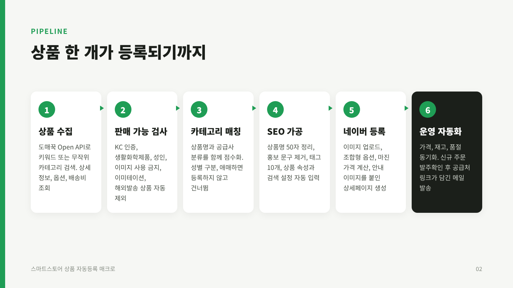
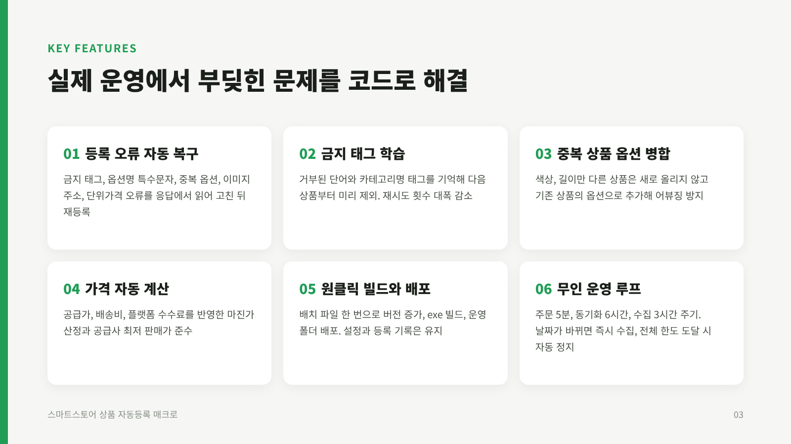
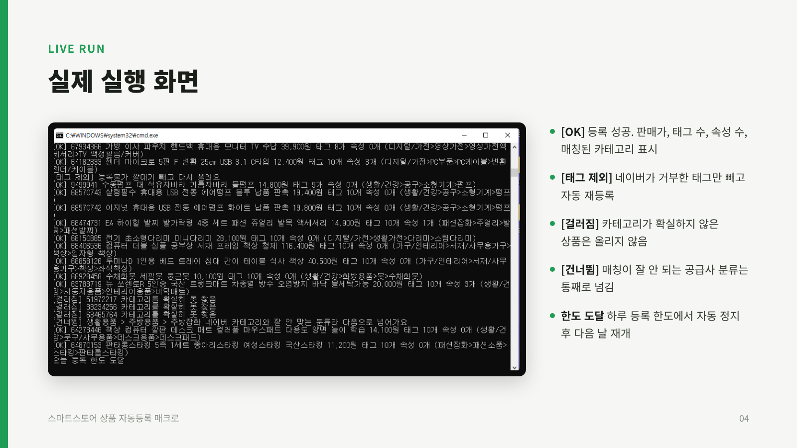
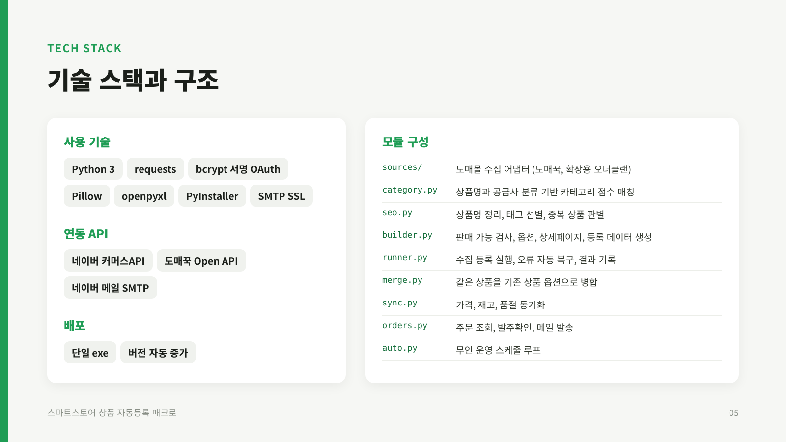
Excel Auto Organizer
Personal project
Merges Excel files with different layouts into one with a single click
A program that merges several Excel files with different layouts into one clean file with a single button.
Demo: 4 files and 180 source rows, with 10 blank rows and 10 duplicates removed, resulting in 170 clean records.
- Recognizes columns even when headers are named differently
- Finds where the table starts even with title rows above it
- Unifies date, currency and number formats
- Removes blank rows and duplicates and normalizes product names
- Generates monthly and per-product summary sheets and a processing report
- Runs without installation
Tech: Python, pandas, Excel, GUI
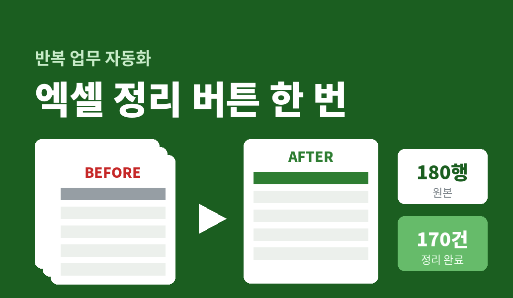
Online Store Product Collector
Personal project
Paste a link and product info and images are sorted into folders automatically
A desktop program that collects publicly listed product info and images when you paste a store list page or product link, and organizes everything automatically.
Each store has its own module, so several stores can be handled from one program.
- Collects product links from list pages and processes them in order
- Saves name, price, main image and detail images into a folder per product
- Merges detail images into a single detail page image
- Writes an Excel summary and a result report automatically
- Resume support that skips products already finished
- GUI with a progress bar and live log, shipped as a no-install exe
- License system designed for time-limited paid use
Tech: Python, Playwright, GUI, exe
Market Data Backtesting Framework
Personal project
Tests multiple strategies on historical prices under identical conditions
I designed and built a backtesting framework that collects historical price data and compares trading strategies under the same conditions.
Testing on real data showed that simple technical strategies have no edge, so I kept it as an honest validation tool that does not inflate results.
- Collects and cleans historical price data through exchange APIs
- Backtest engine with swappable strategies
- Return calculation that includes fees and slippage
- Built on ccxt, so it extends to other exchanges
Tech: Python, pandas, ccxt, Backtesting
Websites and apps
WISM Entertainment Official Website
Client work | Live in production
Official website for an entertainment company, live in production
I built the official website for an entertainment company that runs parties, DJ events, showcases and artist promotion, handling everything from planning to deployment on my own.
- Brand-focused main page with the company logo front and center
- Artist profile pages
- Structure that makes swapping artist photos and info easy
- Responsive on desktop and mobile
- Code managed on GitHub with automatic deploys on Railway
- Custom domain setup
Tech: HTML, CSS, JavaScript, Railway
https://wismentertainment.com
Team Shared Calendar App
Internal team tool
Internal calendar app that notifies the whole team the moment someone changes a schedule
An internal calendar app built so a team of four could manage shared schedules in one place.
Whenever someone adds, edits or deletes an event, every other team member gets a push notification right away.
- Create or join a team with a team code
- Real-time Firestore sync so changes appear on every screen instantly
- Cloud Functions send push notifications to the team on add, edit and delete
- The editor is identified on the server to prevent tampering
- Calendar view by date and an event editor
Tech: React Native, Expo, Firebase, Push notifications
Discord bots
Discord Operation Bots (Applications, Tickets)
Delivered to a team, self operated
Bots that handle team applications and private client inquiry channels automatically
Two bots that take repetitive work off a Discord server.
For a Minecraft RPG server team I set up a department based channel structure and an application bot, and on my commission server a ticket bot opens a private inquiry channel with one button, running 24/7 on Railway.
- Channels and roles designed around 5 departments: planning, building, development, operations and art
- Application submission forwarded to an admin channel, plus a recruitment promo page
- Inquiry button creates a private channel visible only to the client and admins
- Deployed on Railway for 24/7 uptime, code handed over through GitHub so the team can update it
Tech: Discord, Python, Railway, GitHub
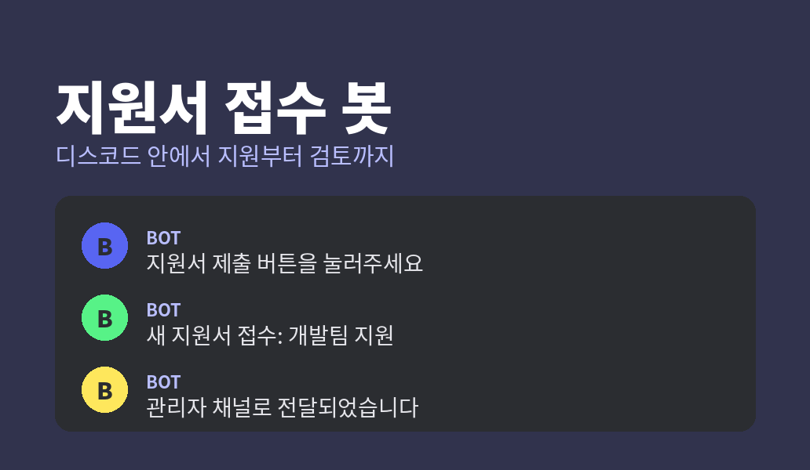
Ggumigi AI
Personal project
Server management bot that builds channels and roles from a plain-language request
Instead of creating Discord channels and roles one by one, you describe what you want and the bot shows a proposed setup, then applies it.
Example: one line like "make 12 roles, same color family per team, darker for team leads" sets up roles, colors and permissions at once.
- Turns natural language requests into channel, role and permission changes
- Shows a list of changes before applying, with Apply and Cancel buttons
- Sets role colors, separate display and admin permissions in one go
- Replies are visible only to the requester, so the server stays clean
Tech: Discord, GPT API, Python, Server management
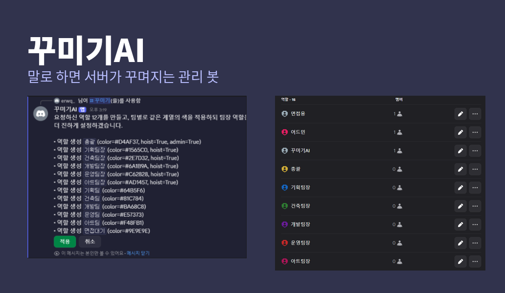
What you can hire me for
These are starting prices. I will give you an exact quote once I hear what you need.
| Area | For example | Timeline | Starting at |
|---|
| Minecraft | Plugins, custom mods, economy or RPG systems, web admin panels | From 7 days | $20 |
| Automation | Excel cleanup, store product auto listing, official API integration, AI API integration such as GPT | From 3 days | $50 |
| Websites | Company websites, online stores, booking or member features | From 7 days | $120 |
| Discord bots | Applications, tickets, verification, role rewards, Minecraft server linking | From 3 days | $20 |
How it works
- Inquiry: tell me what you want on Discord. A rough idea is fine.
- Quote: I send the scope, price and timeline.
- Build: I show you the progress once halfway through to stay on track.
- Delivery: you get the finished work with usage instructions.
Revisions and support
- 2 revisions included
- Free bug fixes for 7 days after delivery
- Features not in the original quote are quoted separately
- Payment: 50% upfront, 50% on completion
Have something in mind? Just ask.
A rough idea is enough. I will first tell you whether it is possible and how long it will take. Discord: erwq_
Discord